Soru 1Cevap: A
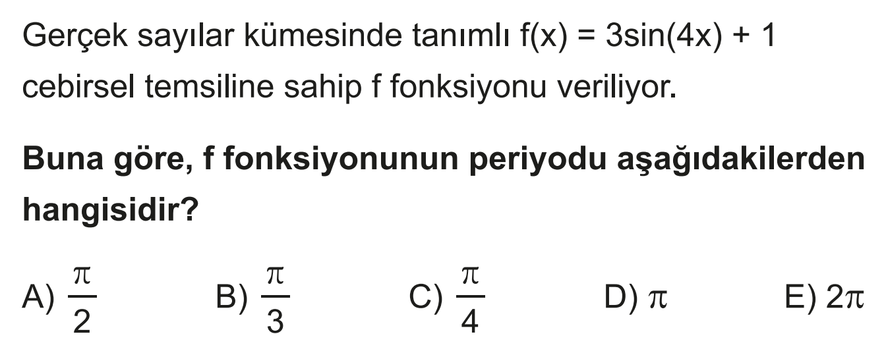
Çözüm
- $a\sin(bx+c)+d$ biçiminde periyot $T = \frac{2\pi}{|b|}$.
- $b = 4$
- $T = \frac{2\pi}{4} = \frac{\pi}{2}$.
Cevap: A
Soru 2Cevap: A
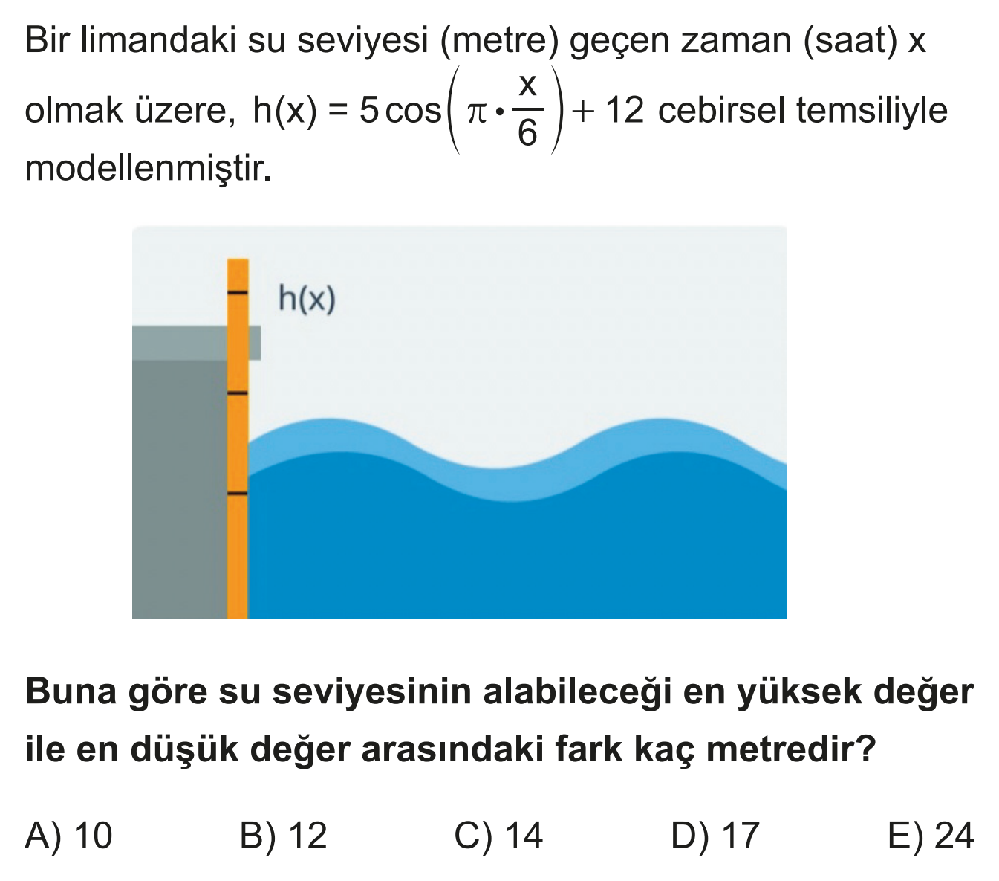
Çözüm
- $-1 \le \cos\left(\frac{\pi x}{6}\right) \le 1$
- $7 \le h(x) \le 17$
- Fark $17 - 7 = 10$ m.
Cevap: A
Soru 3Cevap: C
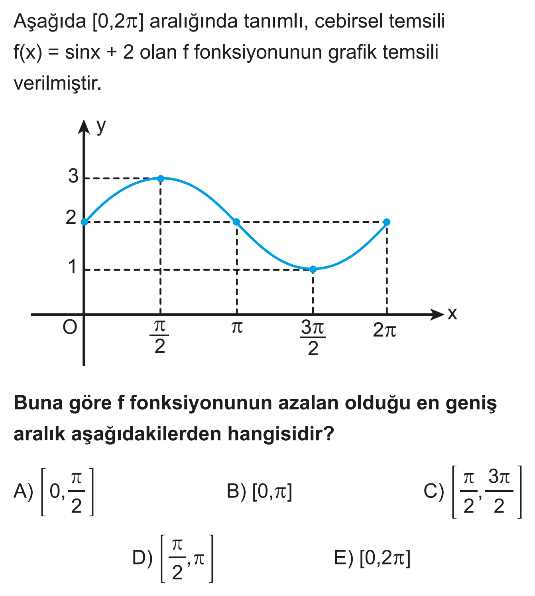
Çözüm
- $\sin x + 2$, $\sin x$ ile aynı aralıklarda artıp azalır (yalnız yukarı ötelenmiştir).
- Grafikte tepe $x = \frac{\pi}{2}$'de, çukur $x = \frac{3\pi}{2}$'dedir.
- En geniş azalan aralık $\left[\frac{\pi}{2},\frac{3\pi}{2}\right]$.
Cevap: C
Soru 4Cevap: A
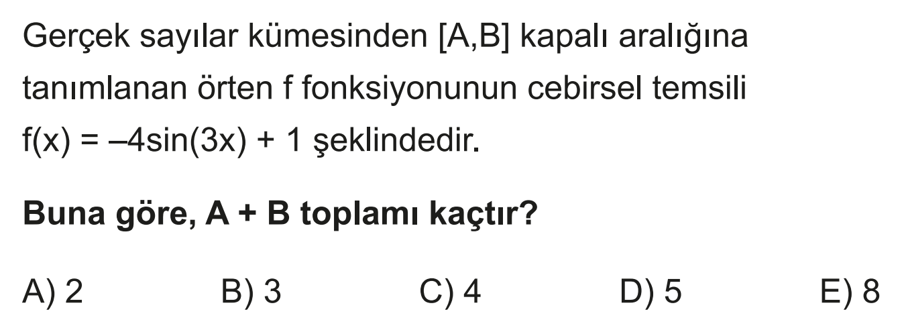
Çözüm
- $-1 \le \sin3x \le 1$ → $-4 \le -4\sin3x \le 4$.
- $-3 \le f(x) \le 5$; örten olduğundan $[A,B] = [-3,5]$.
- $A + B = 2$.
Cevap: A
Soru 5Cevap: C
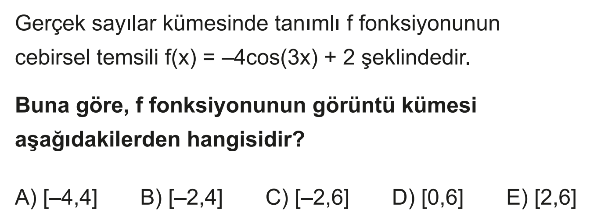
Çözüm
- $-1 \le \cos3x \le 1$ → $-4 \le -4\cos3x \le 4$.
- İki eklenince $-2 \le f(x) \le 6$.
- Görüntü kümesi $[-2, 6]$.
Cevap: C
Soru 6Cevap: B
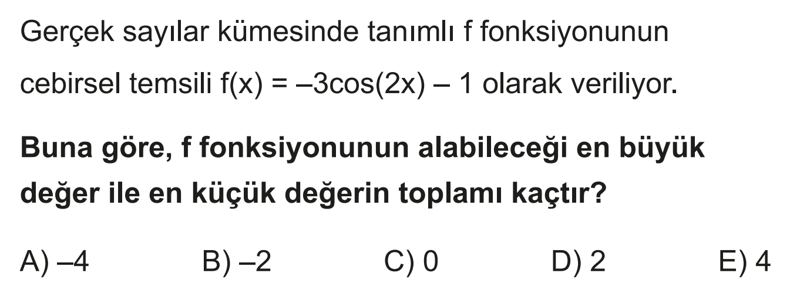
Çözüm
- $-3 \le -3\cos2x \le 3$.
- $-4 \le f(x) \le 2$.
- Toplam $2 + (-4) = -2$.
Cevap: B
Soru 7Cevap: D
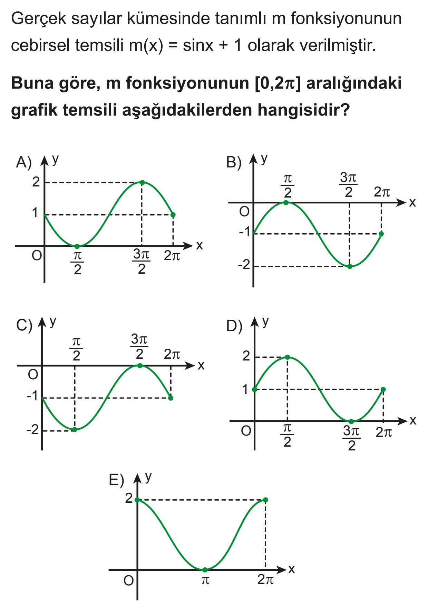
Çözüm
- $m(0) = 1$, $m\left(\frac{\pi}{2}\right) = 2$ (maksimum).
- $m\left(\frac{3\pi}{2}\right) = 0$ (minimum), $m(2\pi) = 1$.
- Bu noktalardan geçen grafik D'dir.
Cevap: D
Soru 8Cevap: B
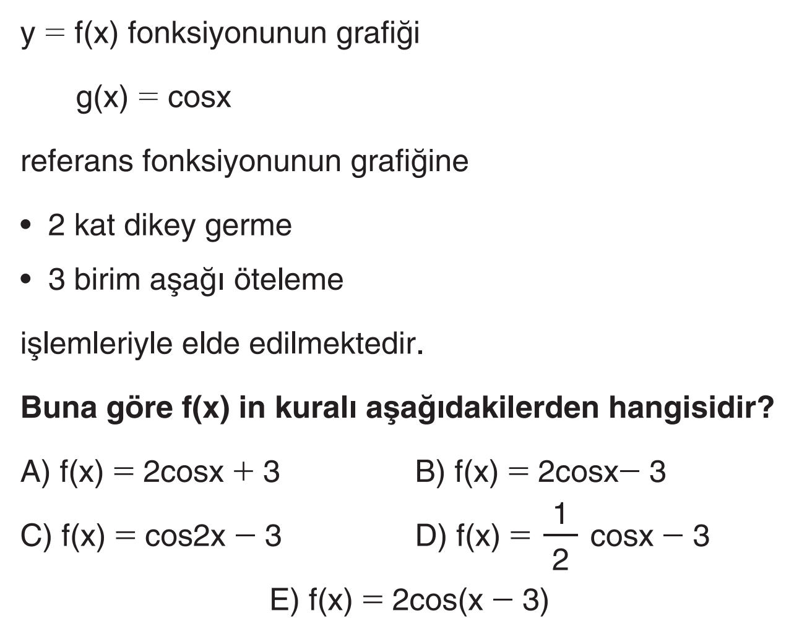
Çözüm
- 2 kat dikey germe: $\cos x \to 2\cos x$.
- 3 birim aşağı öteleme: $2\cos x \to 2\cos x - 3$.
- $f(x) = 2\cos x - 3$.
Cevap: B
Soru 9Cevap: C
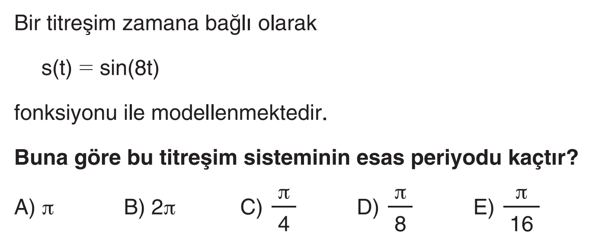
Çözüm
- $s(t) = \sin(8t)$ → $b = 8$.
- $T = \frac{2\pi}{8}$
- $= \frac{\pi}{4}$.
Cevap: C
Soru 10Cevap: D
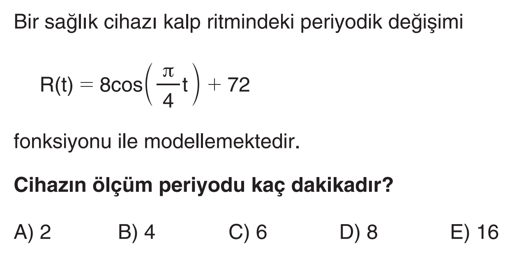
Çözüm
- $b = \frac{\pi}{4}$
- $T = \frac{2\pi}{\pi/4}$
- $= 8$ dakika.
Cevap: D
Soru 11Cevap: C
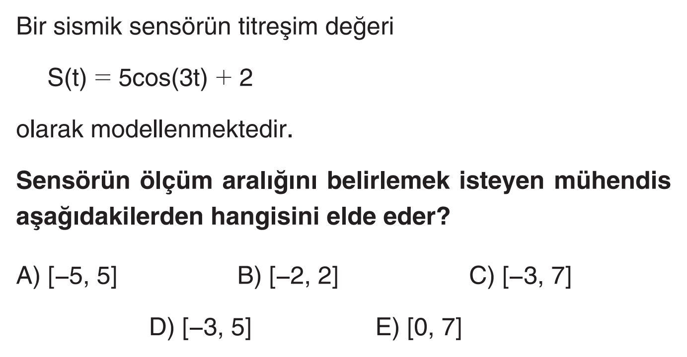
Çözüm
- $-1 \le \cos3t \le 1$ → $-5 \le 5\cos3t \le 5$.
- 2 eklenir: $-3 \le S(t) \le 7$.
- Ölçüm aralığı $[-3, 7]$.
Cevap: C
Soru 12Cevap: B
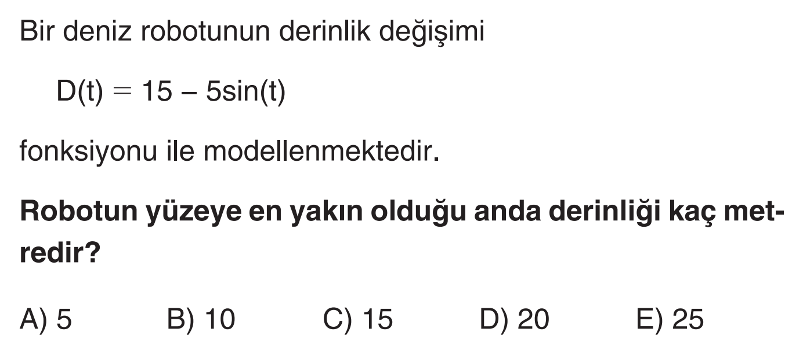
Çözüm
- $-1 \le \sin t \le 1$ → $10 \le 15 - 5\sin t \le 20$.
- Yüzeye en yakın an derinliğin en küçük olduğu andır.
- En küçük derinlik $10$ m.
Cevap: B
Soru 13Cevap: E
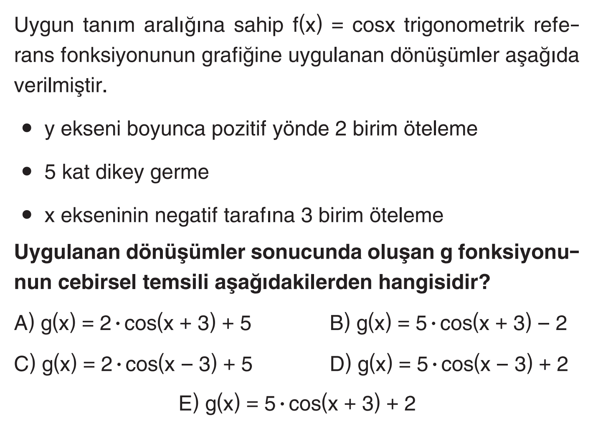
Çözüm
- 5 kat dikey germe: $5\cos x$.
- x ekseninin negatif tarafına 3 birim öteleme: $x$ yerine $x + 3$ → $5\cos(x+3)$.
- y ekseninde pozitif yönde 2 birim: $g(x) = 5\cos(x+3) + 2$.
Cevap: E
Soru 14Cevap: D
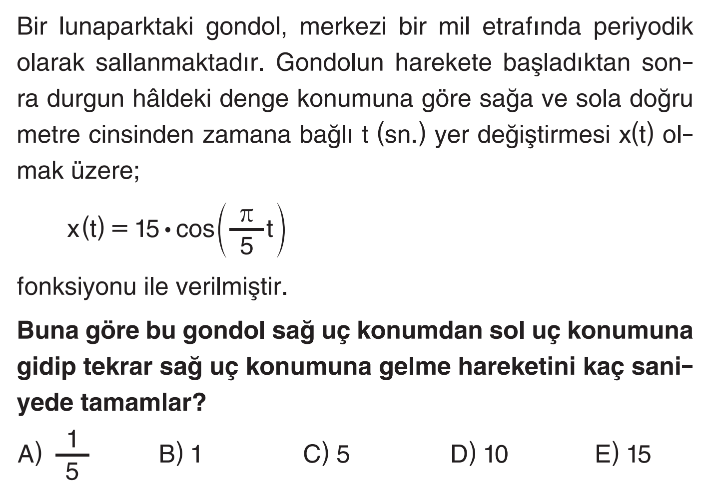
Çözüm
- Sağ uçtan sola gidip yeniden sağ uca gelmek bir periyottur.
- $b = \frac{\pi}{5}$ → $T = \frac{2\pi}{\pi/5}$
- $= 10$ saniye.
Cevap: D
Soru 15Cevap: D
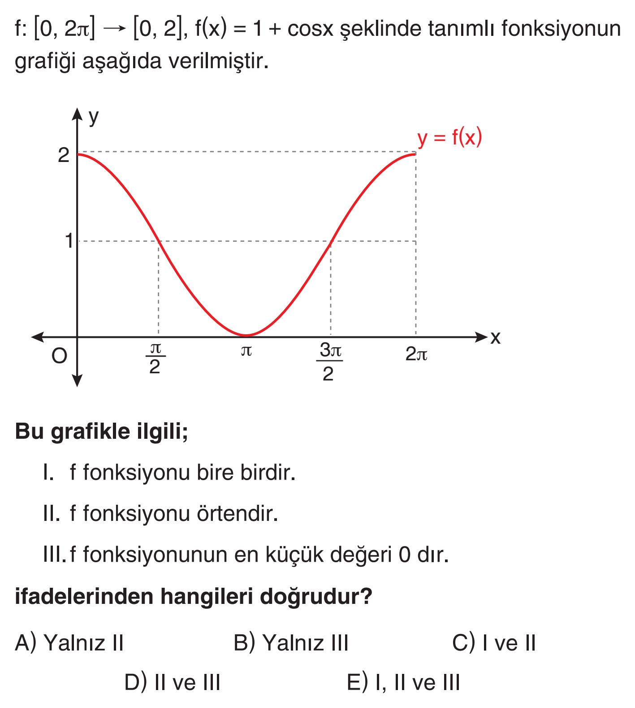
Çözüm
- $f(0) = f(2\pi) = 2$; farklı x'ler aynı değeri alır → I yanlış.
- Değer kümesi $[0,2]$ ve grafik 0'dan 2'ye her değeri alır → II doğru.
- En küçük değer $f(\pi) = 0$ → III doğru. II ve III.
Cevap: D
Soru 16Cevap: D
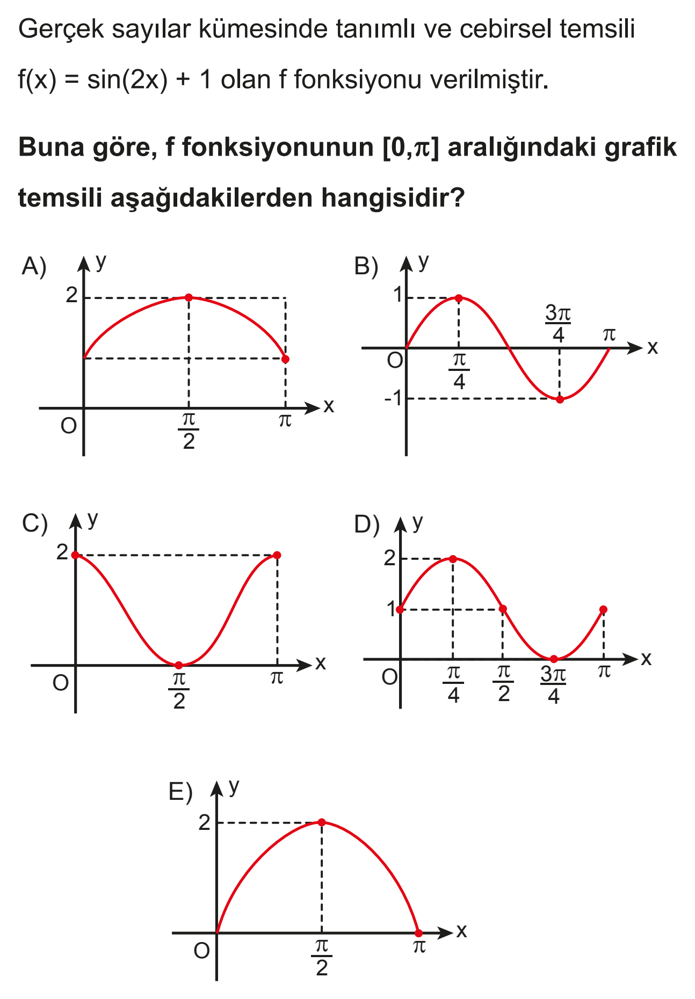
Çözüm
- $f(0) = 1$, $f\left(\frac{\pi}{4}\right) = 2$, $f\left(\frac{\pi}{2}\right) = 1$.
- $f\left(\frac{3\pi}{4}\right) = 0$, $f(\pi) = 1$; periyot $\pi$.
- Bu noktalardan geçen grafik D'dir.
Cevap: D
Soru 17Cevap: C
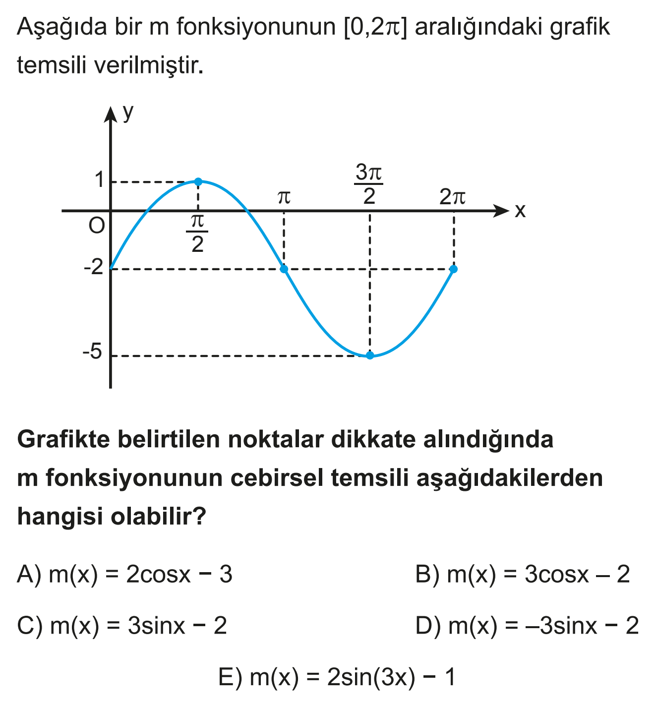
Çözüm
- $m(0) = -2$ → orta çizgi $y = -2$ ve sinüs tipinde.
- Maksimum 1, minimum $-5$ → genlik $\frac{1-(-5)}{2} = 3$; tepe $\frac{\pi}{2}$'de → katsayı pozitif.
- $m(x) = 3\sin x - 2$.
Cevap: C
Soru 18Cevap: C
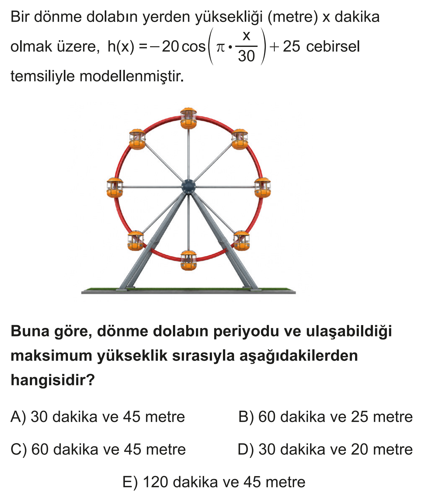
Çözüm
- $b = \frac{\pi}{30}$ → $T = \frac{2\pi}{\pi/30} = 60$ dakika.
- $\cos$ en küçük $-1$ olduğunda $h$ en büyük: $-20\cdot(-1) + 25$.
- Maksimum $45$ m → 60 dakika ve 45 metre.
Cevap: C
Soru 19Cevap: A
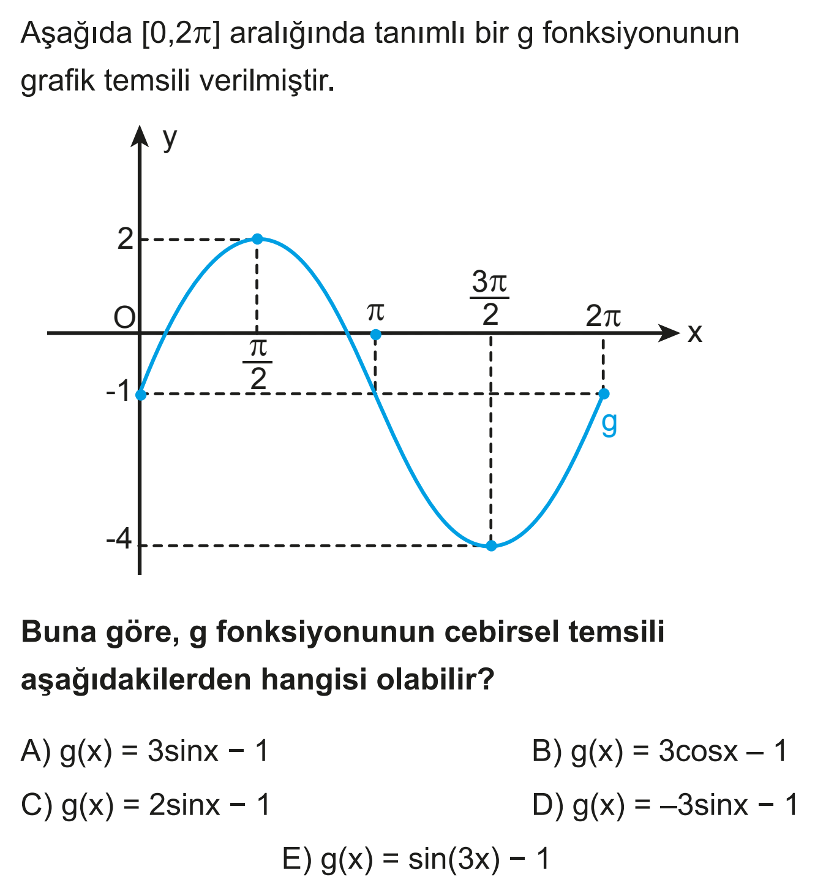
Çözüm
- $g(0) = -1$ → orta çizgi $y = -1$, sinüs tipinde.
- Maksimum 2, minimum $-4$ → genlik 3; tepe $\frac{\pi}{2}$'de → katsayı $+3$.
- $g(x) = 3\sin x - 1$.
Cevap: A
Soru 20Cevap: A
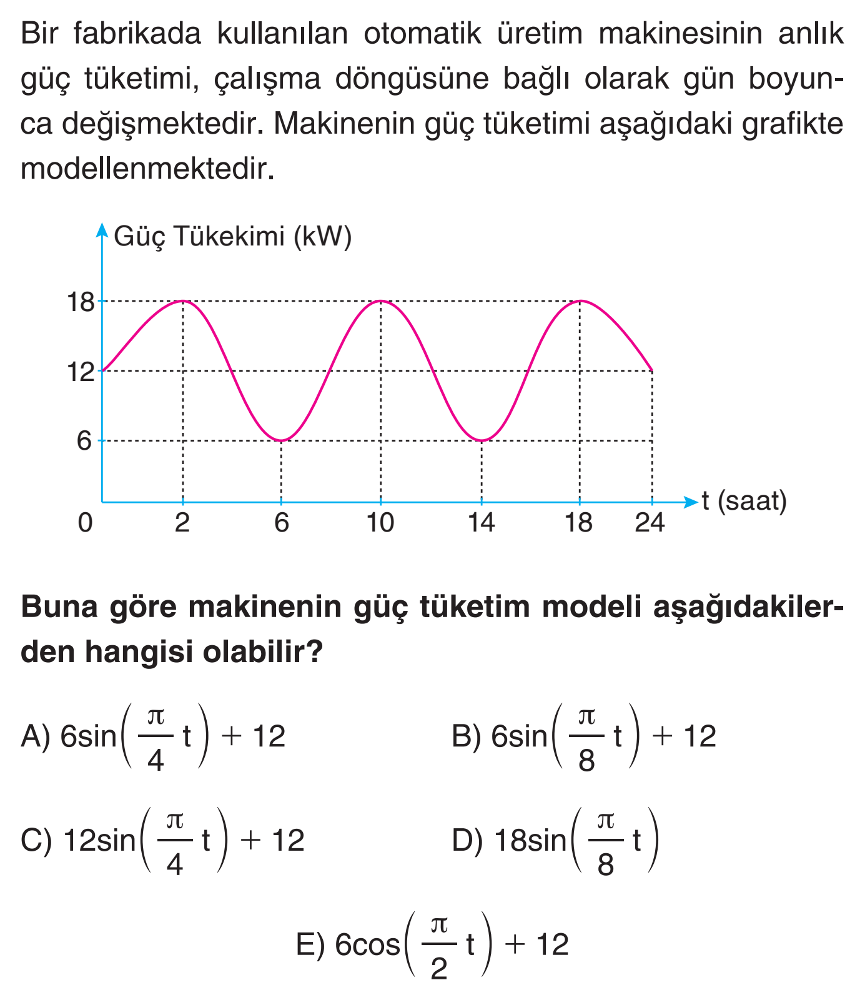
Çözüm
- Orta değer $\frac{18+6}{2} = 12$, genlik $18 - 12 = 6$.
- Tepeler 2, 10, 18'de → periyot 8 → $b = \frac{2\pi}{8} = \frac{\pi}{4}$.
- $t = 2$'de tepe: $6\sin\left(\frac{\pi}{4}\cdot2\right) + 12 = 18$ ✓ → $6\sin\left(\frac{\pi}{4}t\right) + 12$.
Cevap: A
Soru 21Cevap: C
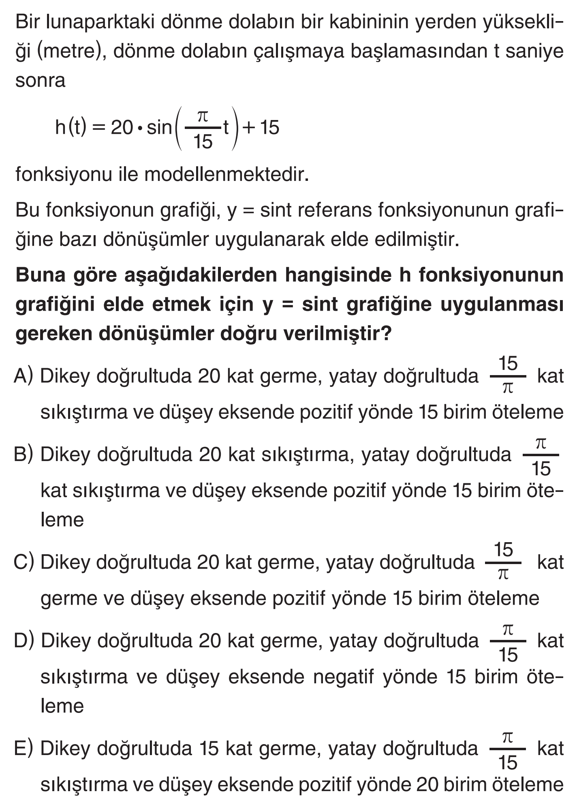
Çözüm
- Katsayı 20 → dikey doğrultuda 20 kat germe.
- $\sin\left(\frac{\pi}{15}t\right)$: periyot $2\pi$'den $30$'a çıkar → yatayda $\frac{15}{\pi}$ kat germe.
- $+15$ → düşey eksende pozitif yönde 15 birim öteleme.
Cevap: C
Soru 22Cevap: B
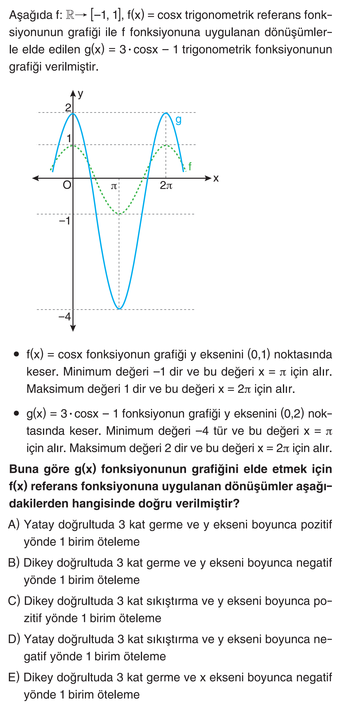
Çözüm
- $\cos x \to 3\cos x$: değerler 3 katına çıkar → dikey 3 kat germe.
- $3\cos x \to 3\cos x - 1$: grafik 1 birim aşağı kayar.
- Dikey doğrultuda 3 kat germe ve y ekseni boyunca negatif yönde 1 birim öteleme.
Cevap: B
Soru 23Cevap: C
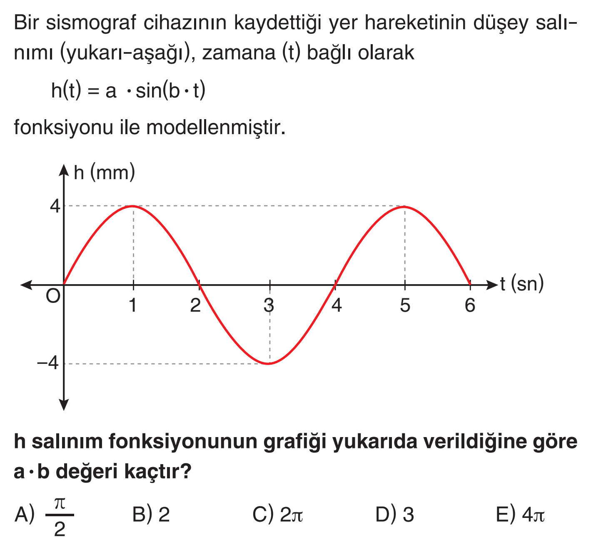
Çözüm
- Grafiğin tepe değeri 4 → $a = 4$.
- $t = 0$'dan $t = 4$'e bir tam dalga → periyot 4 → $\frac{2\pi}{b} = 4$, $b = \frac{\pi}{2}$.
- $a\cdot b = 4\cdot\frac{\pi}{2} = 2\pi$.
Cevap: C
Soru 24Cevap: E
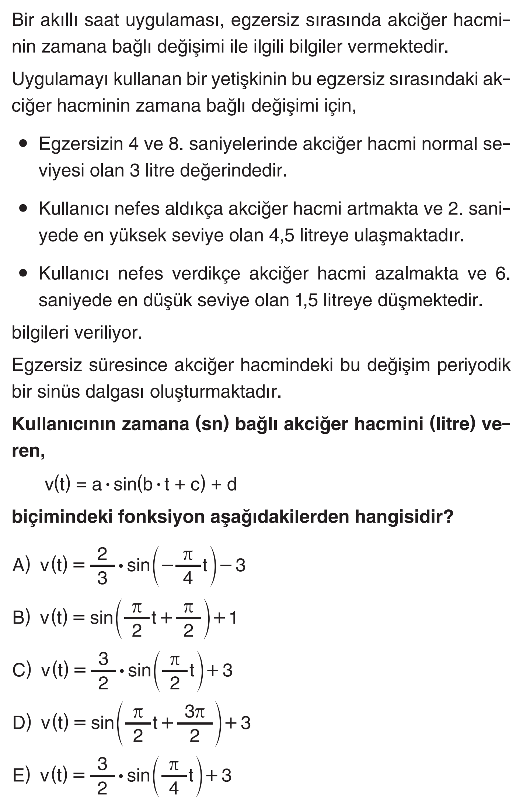
Çözüm
- Orta değer 3, maksimum 4,5 → $a = \frac32$, $d = 3$.
- 2. saniyede maksimum, 6.'da minimum → yarım periyot 4, periyot 8 → $b = \frac{\pi}{4}$.
- $v(2) = \frac32\sin\frac{\pi}{2} + 3 = 4{,}5$ ✓ → $v(t) = \frac32\sin\left(\frac{\pi}{4}t\right) + 3$.
Cevap: E